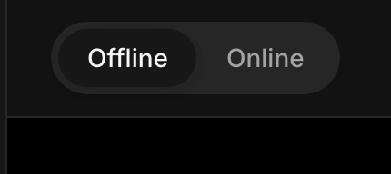
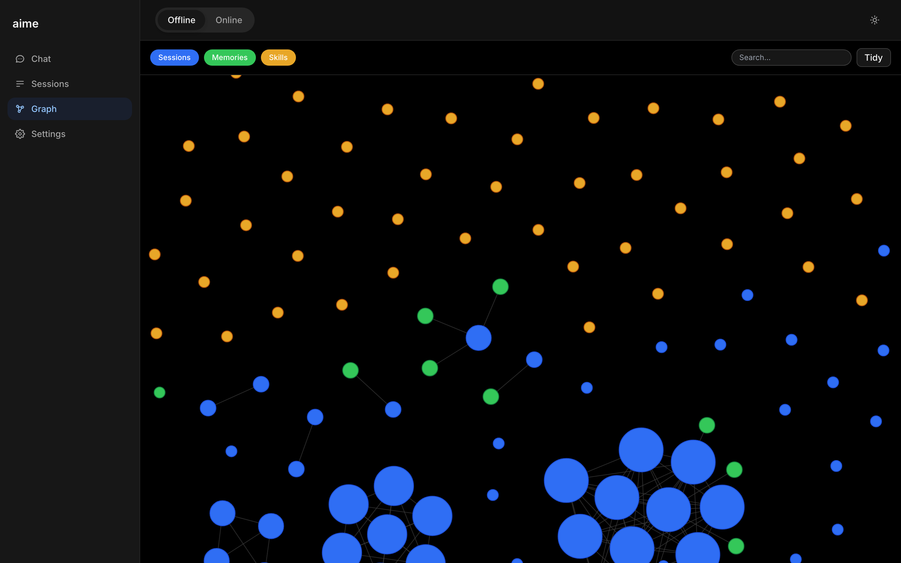
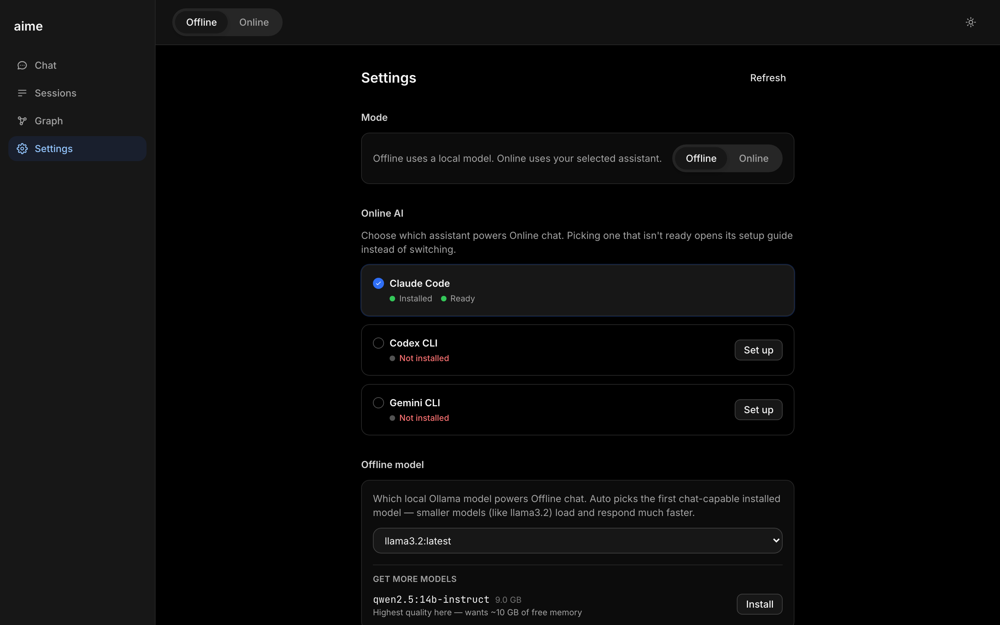

introducing
ai, me.
A self-hosted AI with one switch. Offline keeps it private and free. Online hands the same chat to Claude so it can actually get things done. Either way, it remembers you, and that memory stays on your disk.
what it is
AI that actually knows you
One assistant, one switch, and a memory that's actually yours.
Remembers you
Every conversation quietly adds to a memory it keeps about you, automatically.
Tap to learn more ›No forms to fill out. Say something once, and it's saved as a memory you can see, search, and tidy up later.
🗺️ Drawn as a map you can seeMakes real files
Ask for a spreadsheet, a script, a PDF. It writes the actual file, ready to download.
Tap to learn more ›Upload a messy CSV and ask it to clean it up. Every chat session gets its own little workspace on disk.
📄 Real files, in the chatYours, always
Everything lives on your device. No cloud, no servers listening in. Your thoughts stay yours.
Tap to learn more ›Everything stored as plain files on your device. Open them, move them, delete them. They're just files.
💾 Your own disk, not ourssee it for yourself
Real product. Real screenshots.
No mockups on this part. This is aime, running on an actual machine, right now.
Offline: ask a question, a small model on your machine answers, streaming in real time. No internet needed.
Online: flip the switch, ask for a file, Claude writes it and it shows up ready to download.



under the hood
Pick a model, or let it pick for you
No config files, no terminal. Settings shows you what's installed and ready, and lets you add more with one click.
Works out of the box
aime picks the first ready model on your machine, so offline chat works the moment you open it.
See what's installed
Claude Code, Codex, Gemini, and your local Ollama models, listed with a plain ready or not-installed status.
One click to add more
Browse more local models with their size and memory needs shown up front, then install with a single click.
Switch anytime
Change your offline model or your online assistant from the same screen, whenever you want.
built differently
What you share stays with you
Most AI sends your data to a company's server. Not here. It runs on your device and saves to your machine. End of story.
Runs on your device
Offline, it works right on your computer. Nothing leaves the machine unless you flip to Online.
Tap to learn more ›Offline mode needs no internet connection at all. On a plane, off the grid, wherever you are.
✈️ Works with no internetSaved locally
Your conversations and memory live on your machine, in a folder you can open, move, or delete anytime.
Tap to learn more ›Memories are saved as plain files you can open yourself. Not a black box, not a database you can't see.
🗂️ Just files on diskYou own it, fully
No company holding your data. Switch from Claude to ChatGPT tomorrow, and your memory comes with you.
Tap to learn more ›Every AI vendor plugs into the same switch. The memory underneath is what actually belongs to you.
🔀 Switch vendors anytimeyour privacy
Online when you say so.
Offline by default.
Most AI is always connected, always sending. This one isn't. It lives on your device, and nothing leaves unless you ask it to.
Offline by default
Nothing leaves your device unless you ask. No background syncing, no data collection, no profiles being built while you sleep.
Tap to learn more ›Even the AI model itself runs locally. No API calls, no usage logs, no third-party involvement unless you want it.
🔌 No internet requiredOnline, when you need power
Flip the switch and the same chat gets handed to Claude, so it can run real commands and make real files. Flip back anytime.
Tap to learn more ›Slash commands, file creation, real work. Claude, ChatGPT, or Gemini, whichever you'd rather use.
📄 Makes real fileshow it works
Three steps to your AI
No setup wizards. No lengthy onboarding. Just a conversation.
Flip the switch
Pick Offline for private and free, or Online to hand your chat to Claude. Change your mind anytime.
Just start typing
No setup wizard, no account wall. One command starts the app, then it's just a chat box.
Watch it remember
It quietly saves what matters as you go, draws it as a map, and tidies itself up when you ask.
ready?
Be first to meet your aime
We're rolling out early access. Drop us a note and we'll reach out personally.
Request access →